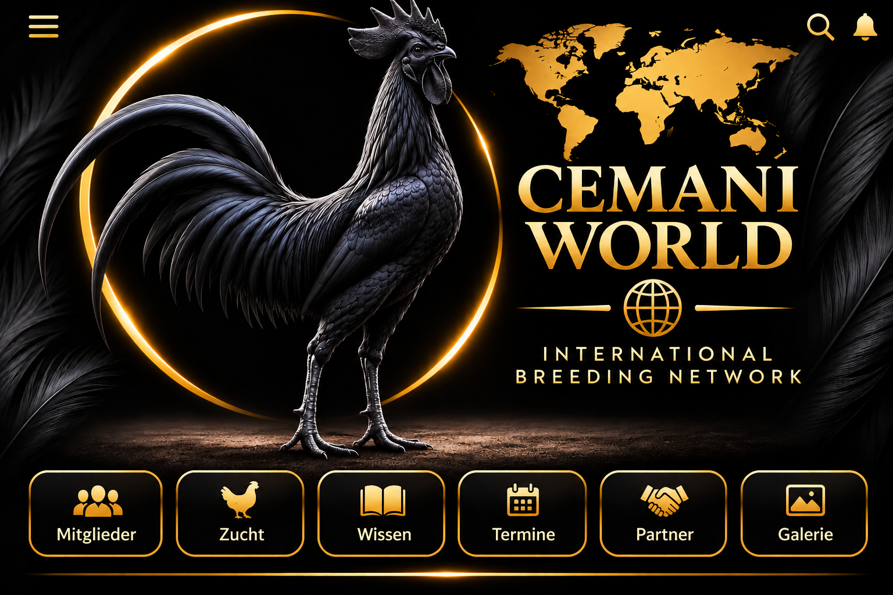

Welcome to Cemani World
Your international platform for Cemani breeding.
My Breeding Book
Manage your birds, pedigrees and breeding lines.
Worldwide Breeder Network
Connect with breeders around the world.

INTERNATIONAL BREEDING NETWORK
Your international platform for Cemani breeding.
Manage your birds, pedigrees and breeding lines.
Connect with breeders around the world.